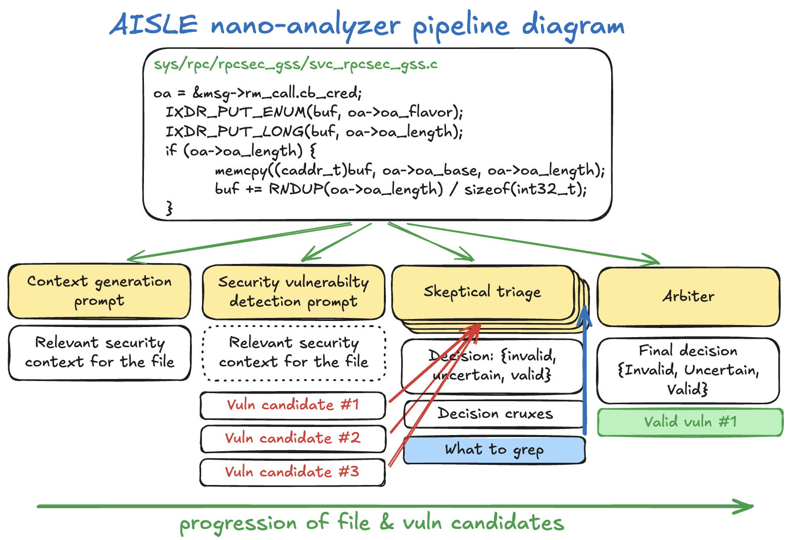

We scan codebases for security bugs.
- 25open-source projects merged our fixes
- 50+fixes landed upstream
- 30+more waiting for review
- $0charged to any maintainer
How it works
- AnalyseYour code is mapped and the review is planned to fit your budget.
- ReviewEach file is read with its security context and searched for candidate bugs.
- VerifySkeptical reviewers try to disprove each candidate; an arbiter settles split votes.
- ReportYou get the findings that held up, with fixes, what was covered and what it cost.

What it does
BudgetScan finds security bugs in your code and writes the fixes. We optimise for one thing: the quality of the patches you get per dollar.
More per dollar
Set a budget for a review. The work is planned to get the most verified findings out of it, and stays under your cap.
Verified findings
Each finding is challenged over several rounds that search the rest of your code. Most noise is gone before you see it.
Fixes, not just findings
A finding comes with a proposed fix. If you want, we check it by hand and send you a tested patch.
Runs your way
Command line, GitHub Action or desktop app. Use whichever fits how your team works.
Deadline
Set a time limit. When it gets close, the review wraps up and reports what it covered, so CI is not held up.
On your servers
Run it on your own infrastructure against your own model endpoint, so your code never leaves your network.
Fixes maintainers merged
- tmux
- dnsmasq
- ProFTPD
- KDE Connect
- oauth2 (Ruby)
- Himalaya
- Windmill
- mise
- Orca
- Yopass
- ai-job-search
- curl
- ghostty
- Nextcloud News
- Nextcloud Desktop
- rustic
- imap-codec
- Rethink DNS
- OpenMontage
- Umka
- Iceraven
- Handy
- Redactor
- VectorCraft
- alza-mcp-community
tmux: server crash on copy-mode -S
“Applied to OpenBSD now, will be in GitHub later. Thanks!”Nicholas Marriott, tmux author Released in v1.36.0
KDE Connect: unbounded Bluetooth buffer
“Thanks for catching this!”Albert Vaca Cintora, KDE Connect creator Merged upstream
Himalaya: terminal escape injection
“Thanks for the report and the clear write-up, the problem is real.”Clément Douin, Himalaya maintainer
Talk to us
Tell us what you would like reviewed. We can set you up with early access, or do the review for you.
Email usMatej Vrzala & Martin Vlach